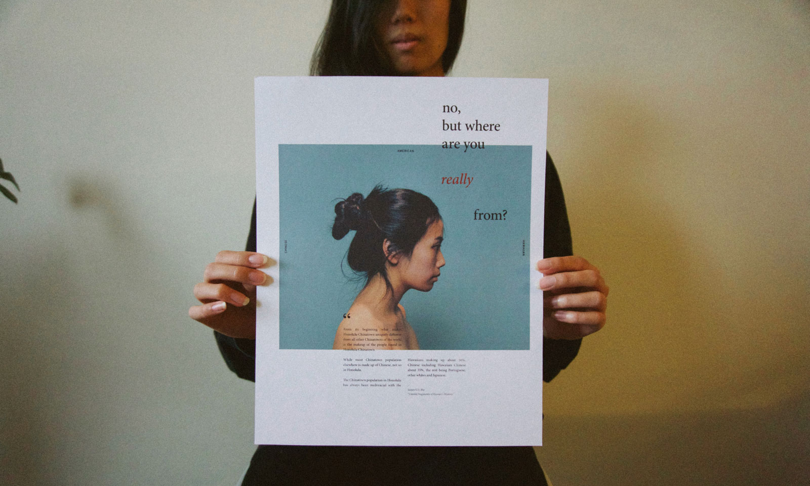

American
Last year, I was asked to participate in “Me, Myself, and I”, a local art show centered on self-identity.

Artist statement
I was never conscious of my “Asianness” growing up because I didn’t have to be. Most, if not all, of my friends and classmates were the grandchildren or great-grandchildren of immigrants, people who left everything they knew, and moved from China, Japan, the Philippines, to start a new life in Hawai‘i.
It was only until I left the islands for the mainland that I’ve been met with curious and pointed questions about where I’m from. Because I don’t “look like an American”, people have prodded for the answers they want to hear: that I’m actually from China, or Japan, or Korea. For years, it made me feel self-conscious, defensive, irritated to find that a lot of people did not recognize nor accept a Chinese-Hawaiian as an American. I didn’t want to look like me.
Recently, though, I have stopped giving a shit about the assumptions and accusations people have. White is not the only kind of American, but for too long, it has been the default.